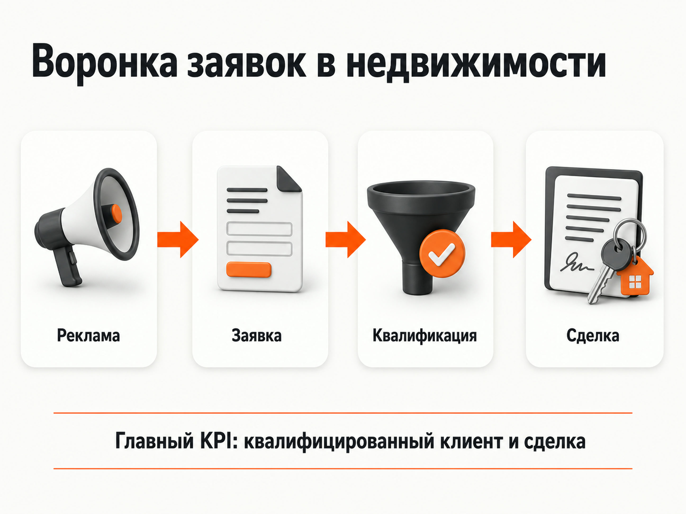
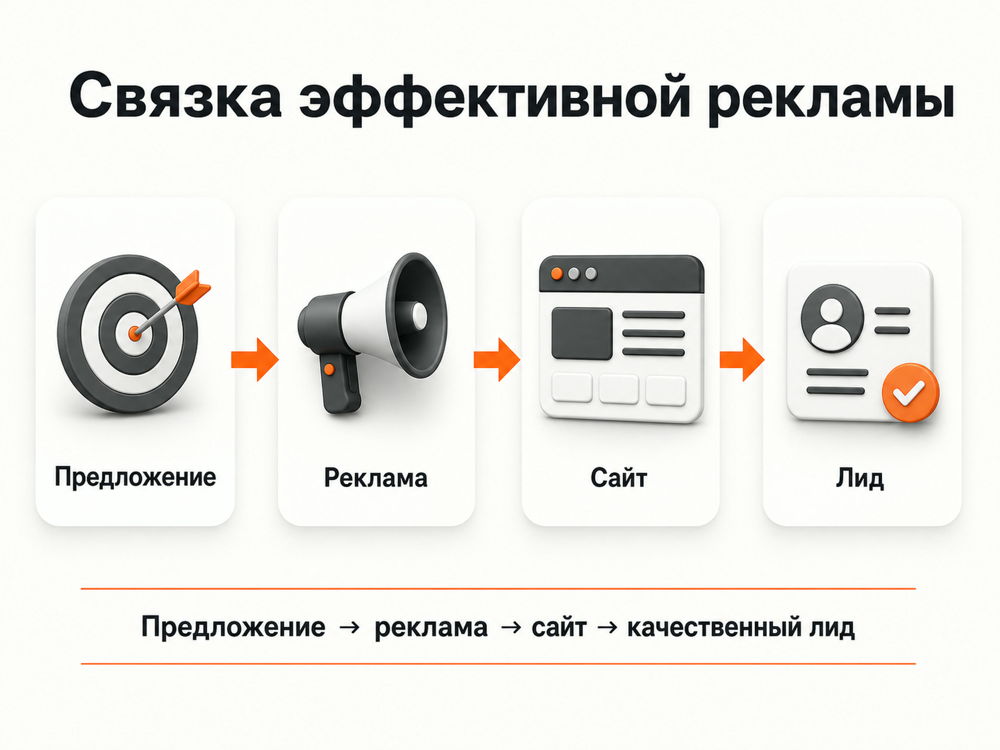

Блог о платном трафике
Реклама агентства недвижимости: как получать целевые заявки и не сливать бюджет
Реклама агентства недвижимости должна начинаться не с выбора рекламного канала, а с ответа на вопрос: кого именно нужно привлечь. Покупатель квартиры, собственник, который хочет продать объект, клиент на trade-in и инвестор в коммерческую недвижимость - это разные аудитории с разным спросом.
Если объединить их в одну рекламную кампанию и вести на общую страницу агентства, бюджет быстро распределится между направлениями, а понять реальную эффективность будет сложно.
На практике для агентства недвижимости я бы строил продвижение вокруг отдельных услуг и контролировал не просто количество заявок, а их качество и дальнейшее движение к сделке.
Какие услуги агентства недвижимости рекламировать отдельно
У крупного агентства может быть несколько направлений:
- покупка квартир на вторичном рынке;
- продажа недвижимости;
- новостройки;
- аренда;
- коммерческие помещения;
- загородная недвижимость;
- инвестиционная недвижимость;
- сопровождение сделок;
- trade-in;
- подбор недвижимости.
Спрос и экономика у этих услуг отличаются. Поэтому нет смысла оценивать всю рекламу агентства одним показателем CPL.
Например, заявка человека, который хочет снять недорогую квартиру, и обращение собственника дорогой недвижимости имеют совершенно разную ценность для бизнеса.
Я обычно разделяю направления хотя бы на уровне рекламных групп и аналитики, а для сильно отличающихся услуг использую отдельные посадочные страницы.

Яндекс Директ для агентства недвижимости
Один из основных каналов для агентства - Яндекс Директ. Он позволяет работать как с уже сформированным спросом на Поиске, так и с потенциальными клиентами через Рекламную сеть Яндекса.
Современная Единая перфоманс-кампания позволяет работать с показами на Поиске, в РСЯ и других площадках Яндекса, поэтому структура рекламы должна строиться не вокруг количества кампаний, а вокруг бизнес-задач и сегментов аудитории.
Настройка Яндекс Директ под ключ.
Реклама на Поиске
Поиск подходит для пользователей, которые уже формулируют свою потребность:
- купить квартиру в конкретном районе;
- продать квартиру через агентство;
- обменять квартиру на новостройку;
- купить коммерческое помещение;
- подобрать новостройку;
- купить помещение для инвестиций.
Такой трафик обычно находится ближе к обращению, но конкуренция в недвижимости может быть высокой.
Одна из типичных ошибок - собирать максимально широкую семантику. Агентству не нужен каждый человек, который вводит слово «квартира».
Нужно отделять запросы, которые соответствуют конкретной услуге, от информационного и неподходящего спроса. После запуска поисковые запросы необходимо регулярно проверять и исключать направления, которые расходуют бюджет без полезных обращений.
РСЯ
Рекламная сеть Яндекса работает иначе. Человек может не искать агентство непосредственно в момент показа объявления, но алгоритмы могут определить его как потенциально подходящего пользователя.
В РСЯ особенно сильно влияют:
- рекламное предложение;
- изображения;
- выбранная аудитория;
- посадочная страница;
- данные о конверсиях;
- накопленная статистика.
В недвижимости я бы не рассматривал РСЯ как дополнительный канал, который нужно запускать только после Поиска.
В некоторых проектах она способна давать основную часть обращений.
Например, в моем проекте с агентством недвижимости из Екатеринбурга продвигалась услуга trade-in квартир. Основной поток заявок удалось получить именно через РСЯ. При рекламном бюджете около 38 000 рублей в месяц заявки стоили примерно 1500-2007 рублей, а квалифицированные обращения - 1915-3010 рублей.
Подробнее результаты и настройки показаны в кейсе рекламы trade-in для агентства недвижимости.
Нельзя рекламировать все агентство одним предложением
Фраза вроде «Агентство недвижимости - покупка, продажа и аренда квартир» слишком общая.
Рекламное предложение лучше строить под конкретную потребность.
Человек, который хочет обменять старую квартиру на новую, должен увидеть предложение про обмен. Владельцу коммерческого помещения нужна информация о работе с коммерческой недвижимостью. Покупателю новостройки - подбор объектов по его требованиям.
Чем ближе объявление и страница к реальной задаче пользователя, тем проще человеку понять, что ему предлагают.
Это касается не только текстов объявлений. Для разных направлений могут отличаться:
- аргументы;
- фотографии;
- формы заявки;
- вопросы квиза;
- способы связи;
- содержание первого экрана;
- целевые действия.
Какой сайт нужен для рекламы агентства недвижимости
Большой сайт агентства с каталогом объектов полезен для SEO, знакомства с компанией и работы с уже заинтересованной аудиторией. Но он не всегда является лучшей посадочной страницей для платного трафика.
Это хорошо видно на примере моего проекта с trade-in недвижимости.
У клиента уже был большой сайт, ориентированный в том числе на органический трафик. Для рекламы он оказался слишком размытым: много разделов и вариантов перехода отвлекали человека от конкретного предложения.
SEO-сайт оставили, а рекламный трафик направили на отдельный лендинг под trade-in. На странице сократили путь до обращения и добавили квиз. В результате удалось удержать стоимость заявок в нужной клиенту экономике.
Это не означает, что каждому агентству обязательно нужен квиз или отдельный лендинг.
Сначала нужно проверить существующий сайт. На странице должно быть понятно:
- Что именно предлагает агентство.
- Для какого клиента предназначена услуга.
- С какой недвижимостью работает компания.
- В каком регионе.
- Почему имеет смысл оставить заявку именно здесь.
- Что произойдет после отправки формы.
Если сайт отвечает на эти вопросы и нормально конвертирует трафик, создавать новую страницу только ради самого факта запуска рекламы нет смысла.
Квиз в рекламе недвижимости
Квиз может хорошо работать там, где перед обращением клиенту все равно придется ответить на несколько вопросов.
Например:
- какой объект интересует;
- район;
- бюджет;
- площадь;
- тип недвижимости;
- срок покупки или продажи.
Но квиз не должен превращаться в анкету на 15 экранов.
Его задача - облегчить первый контакт и одновременно получить минимальную информацию для квалификации обращения.
В проекте с trade-in прохождение шагов квиза использовалось в том числе как дополнительный сигнал для оптимизации рекламы.
Во втором моем проекте, связанном с продажей коммерческих помещений в ЖК «Ватутинки Парк», трафик также шел через квиз-воронку. После переработки текстов, вопросов и рекламных связок стоимость заявки снизилась примерно с 6000 до 1700 рублей. В одном из месяцев 10 из 12 обращений были квалифицированными.
Подробности - в кейсе рекламы коммерческой недвижимости в ЖК «Ватутинки Парк».
Главное - считать не заявки, а квалифицированных клиентов
Количество лидов само по себе мало говорит об эффективности рекламы недвижимости.
Допустим, один источник дает:
- 30 заявок;
- 20 недозвонов и случайных обращений;
- 5 неподходящих клиентов;
- 5 потенциальных покупателей.
Другой источник приносит всего 15 обращений, но 10 из них подходят отделу продаж.
Если смотреть только на CPL, первый источник может казаться эффективнее. Для бизнеса ситуация обратная.
Поэтому минимальная аналитическая цепочка должна выглядеть так:
расходы → обращения → квалифицированные лиды → встречи или показы → сделки
Для агентства с длинным циклом принятия решения особенно полезно связывать рекламу с CRM.
Яндекс позволяет передавать офлайн-конверсии из CRM и других источников. Это дает возможность учитывать действия, которые происходят уже после заявки на сайте.
Например, можно разделять простую отправку формы и более ценное действие дальше по воронке.

Как оценивать эффективность рекламы
CTR и цена клика могут использоваться для диагностики кампаний, но главными показателями бизнеса я бы их не делал.
Для агентства недвижимости гораздо полезнее смотреть:
| Показатель | Что показывает |
|---|---|
| CPL | Сколько стоит первичная заявка |
| Стоимость квалифицированного лида | Сколько стоит реально подходящий клиент |
| Конверсия заявки в квалифицированную | Качество входящего трафика |
| Записи на встречу или показ | Движение клиента по воронке |
| Сделки | Итоговый результат рекламы |
| Стоимость привлечения клиента | Реальную экономику канала |
Если сделок мало и цикл длинный, ждать только финальной продажи для каждой оптимизации невозможно. Тогда нужны промежуточные квалифицированные этапы, которые достаточно хорошо связаны с будущей сделкой.
Другие каналы рекламы агентства недвижимости
Яндекс Директ не обязан быть единственным источником клиентов.
В зависимости от направления агентство может использовать:
- Авито и другие классифайды;
- Яндекс Карты;
- SEO;
- контент;
- социальные сети;
- Telegram;
- собственную клиентскую базу;
- ретаргетинг.
Особенно логично использовать несколько каналов, если у агентства широкий ассортимент объектов и длинный цикл сделки.
При этом я бы не распределял бюджет между площадками по заранее заданным процентам. Сначала нужно понимать, где находится конкретная аудитория и насколько хорошо канал приводит клиентов именно по нужному направлению.
Ретаргетинг для недвижимости
Покупка недвижимости редко происходит после первого посещения сайта.
Пользователь может посмотреть несколько вариантов, закрыть страницу, вернуться через неделю и снова продолжить поиск.
Сегменты Яндекс Метрики и Яндекс Аудиторий позволяют работать с пользователями, которые уже взаимодействовали с сайтом, и использовать такие данные в рекламе.
Аудитории можно разделять, например, по посещенным страницам:
- новостройки;
- коммерческая недвижимость;
- trade-in;
- продажа квартиры;
- конкретные категории объектов.
Пользователю, который изучал коммерческие помещения, логичнее повторно показывать предложение по коммерческой недвижимости, а не общую рекламу агентства.
Почему реклама агентства недвижимости может не работать
Чаще всего проблема находится не в какой-то одной настройке.
Слабый результат может складываться сразу из нескольких факторов:
- слишком широкая аудитория;
- смешивание разных направлений;
- слабое рекламное предложение;
- неподходящая посадочная страница;
- высокая конкуренция;
- отсутствие аналитики;
- оптимизация на любую отправку формы;
- отсутствие обратной связи от отдела продаж;
- медленная обработка заявок;
- регулярная остановка работающих кампаний.
Последняя проблема встречалась в моем кейсе коммерческой недвижимости.
Клиенту требовалось ограниченное количество лидов, поэтому при достижении нужного объема кампании приходилось останавливать. Для алгоритмов такие паузы создавали дополнительные сложности с обучением, хотя потенциал получения обращений был выше.
Как я бы запускал рекламу агентства недвижимости
Последовательность работы выглядит так:
- Определить приоритетные услуги агентства.
- Разделить покупателей, собственников и другие сегменты.
- Проверить спрос и конкурентов.
- Оценить существующий сайт.
- Подготовить отдельные посадочные страницы там, где это необходимо.
- Настроить Яндекс Метрику и цели.
- Связать рекламу с данными отдела продаж или CRM.
- Запустить отдельные рекламные гипотезы.
- Проверять реальные поисковые запросы и аудитории.
- Считать качество заявок.
- Отключать неэффективные направления и усиливать рабочие.
Сам запуск Яндекс Директа здесь занимает только часть работы.
По своему опыту проектов в недвижимости я в первую очередь смотрю на связку предложение → реклама → посадочная страница → заявка → качество лида. Если одно звено работает плохо, увеличение бюджета обычно только быстрее проявляет проблему.
Заказать контекстную рекламу в Яндекс Директ.

Сколько стоит реклама агентства недвижимости
Универсальной стоимости заявки или минимального бюджета для всей ниши недвижимости нет.
На результат влияют:
- город;
- тип недвижимости;
- средний чек;
- конкуренция;
- аудитория;
- рекламируемая услуга;
- посадочная страница;
- качество работы менеджеров;
- накопленные данные;
- выбранная стратегия.
Даже внутри одного агентства реклама новостроек и привлечение собственников на продажу квартир могут иметь совершенно разную экономику.
Поэтому бюджет лучше рассчитывать от конкретной задачи бизнеса, а не от абстрактной «средней цены лида по недвижимости».
Мои примеры это хорошо показывают: в одном проекте основной задачей был trade-in, в другом - коммерческие помещения. Оба относятся к недвижимости, но рекламные предложения, аудитории и воронки отличались.
Вывод
Эффективная реклама агентства недвижимости строится вокруг отдельных задач клиентов, а не вокруг общего объявления «продажа и покупка недвижимости».
Нужно разделять направления, подбирать под них рекламу и посадочные страницы, отслеживать качество обращений и передавать результаты отдела продаж обратно в аналитику.
Именно поэтому при работе с недвижимостью я оцениваю не количество кликов или форм, а то, какие рекламные связки приводят квалифицированных клиентов и могут дальше масштабироваться.
Примеры реальных проектов: